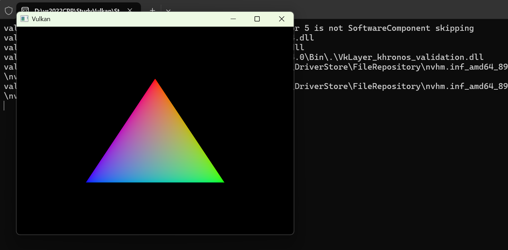
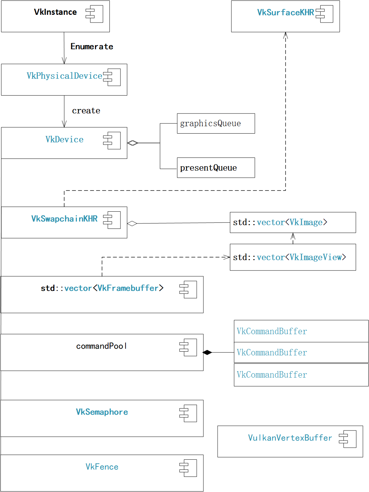
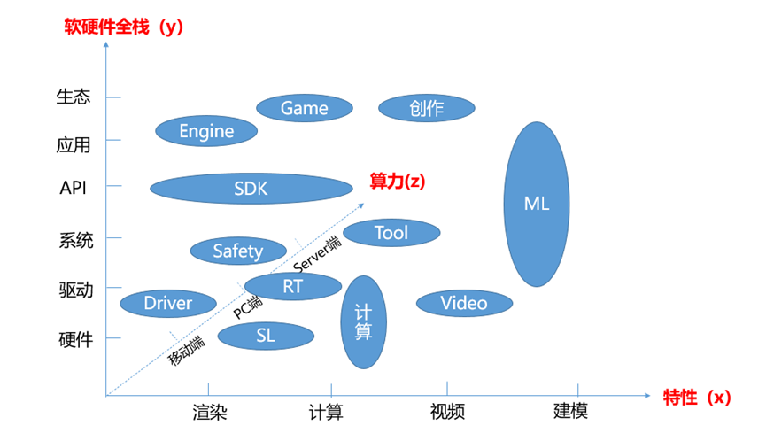

我们已经成功绘制了一个颜色渐变的三角形，并将其显示在窗口上了。但是窗口Surface可能会发生变化，从而使交换链不再与之兼容，比如是窗口大小的变化。所以我们必须捕获这些事件并重新创建交换链。
①添加清理与交换链相关的对象的函数cleanupSwapChain()
创建一个新的cleanupSwapChain()函数，该函数负责释放与交换链对象swapChain关联的所有对象：
1void cleanupSwapChain()2{3// 释放所有的帧缓冲区4for (auto framebuffer : swapChainFramebuffers)5{6vkDestroyFramebuffer(logicDevice, framebuffer, nullptr);7}8// 释放指令缓冲区9// 可以从头重新创建命令池，但相当浪费。所以选择使用vkFreeCommandBuffers函数清理现有的命令缓冲区。10// 这样可以重用现有的池来分配新的命令缓冲区。11//vkFreeCommandBuffers(logicDevice, commandPool,12// static_cast<uint32_t>(commandBuffers.size()), commandBuffers.data());13if (commandBuffer != nullptr)14{15vkFreeCommandBuffers(logicDevice, commandPool, 1, &commandBuffer);16commandBuffer = nullptr;17}18// 销毁图形管道19if (graphicsPipeline != nullptr)20{21vkDestroyPipeline(logicDevice, graphicsPipeline, nullptr);22graphicsPipeline = nullptr;23}24// 释放管道布局25if (pipelineLayout != nullptr)26{27vkDestroyPipelineLayout(logicDevice, pipelineLayout, nullptr);28pipelineLayout = nullptr;29}30// 释放渲染通道31if (renderPass != nullptr)32{33vkDestroyRenderPass(logicDevice, renderPass, nullptr);34renderPass = nullptr;35}36// 释放交换链对应的图像视图37for (auto imageView : swapChainImageViews) {38vkDestroyImageView(logicDevice, imageView, nullptr);39}40// 释放交换链41if (swapChain != nullptr)42{43vkDestroySwapchainKHR(logicDevice, swapChain, nullptr);44swapChain = nullptr;45}46}
② 为VulkanAppBase类添加recreateSwapChain()函数
xxxxxxxxxx221void recreateSwapChain()2{3//当最小化窗口时，拿到的窗口大小是0, 这样创建出来的帧缓冲区大小也应该是0，4// 根本不需要渲染。所以这里进入一个死循环，等到窗口再次显示5int width = 0, height = 0;6while (width == 0 || height == 0) {7glfwGetFramebufferSize(window, &width, &height);8glfwWaitEvents();9}10//调用vkDeviceWaitIdle，确保所有资源已经被使用完毕11vkDeviceWaitIdle(logicDevice);12//清理与交换链关联的资源对象13cleanupSwapChain();14//重建交换链及相关联的其他对象15createSwapChain();16createImageViews();17createRenderPass();18createFramebuffers();19createGraphicsPipeline();20//createCommandPool();//这里没有重建命令池21createCommandBuffer();//使用原来的命令池创建命令缓冲区22}
③ VulkanAppBase类添加响应窗口ON_RESIZED事件的函数
添加一个静态的函数onWindowResized()，用于处理窗口大小改变时响应ON_RESIZED事件：
xxxxxxxxxx121static void onWindowResized(GLFWwindow* window, int width, int height)2{3if (width == 0 || height == 0) return;4//获得类本身的对象5VulkanAppBase* app = reinterpret_cast<VulkanAppBase*>(glfwGetWindowUserPointer(window));6if (width == app->swapChainExtent.width && height == app->swapChainExtent.height)7{8return;//如果窗口大小与原交换链中保存的相同，返回9}10//重构交换链11app->recreateSwapChain();12}
④VulkanAppBase类添加initWindow()的重载函数，响应响应ON_RESIZED事件：
x1void initWindow()2{3glfwInit();4glfwWindowHint(GLFW_CLIENT_API, GLFW_NO_API);6window = glfwCreateWindow(WIDTH, HEIGHT, "Vulkan", nullptr, nullptr);8glfwSetWindowUserPointer(window, this);10glfwSetWindowSizeCallback(window, VulkanAppBase::onWindowResized);11}
⑤修改drawFrame函数，添加同步过程中出现窗口大小改变时，响应重建交换链的代码：
xxxxxxxxxx1221void drawFrame()2{3/* vkWaitForFences 函数可以用来等待一组栅栏 (fence) 中的一个或4全部栅栏 (fence) 发出信号。上面代码中我们对它使用的 VK_TRUE5参数用来指定它等待所有在数组中指定的栅栏 (fence)。我们现在只有6一个栅栏 (fence) 需要等待，所以不使用 VK_TRUE 也是可以的。和7vkAcquireNextImageKHR 函数一样，vkWaitForFences 函数也有一个超时8参数。和信号量不同，等待栅栏发出信号后，我们需要调用 vkResetFences9函数手动将栅栏 (fence) 重置为未发出信号的状态。*/10// 等待前一帧完成 // 参数4：等待所有Fence完成 // 超时12vkWaitForFences(logicDevice, 1, &inFlightFence, VK_TRUE, UINT64_MAX);13//// 将Fence重置为Unsignaled14vkResetFences(logicDevice, 1, &inFlightFence);15/** vkAcquireNextImageKHR参数：161.使用的逻辑设备对象172.我们要获取图像的交换链，183.图像获取的超时时间，我们可以通过使用无符号 64 位整型所能表示的19最大整数来禁用图像获取超时204,5.指定图像可用后通知的同步对象.可以指定一个信号量对象或栅栏对象，21或是同时指定信号量和栅栏对象进行同步操作。22在这里，我们指定了一个叫做 imageAvailableSemaphore 的信号量对象236.用于输出可用的交换链图像的索引，我们使用这个索引来引用我们的24swapChainImages数组中的VkImage对象，并使用这一索引来提交对应的指令缓冲 */25// 从交换链获取图像27uint32_t imageIndex; //超时时间 //指定图像可用后通知的同步对象，可以指定一个信号量对象或栅栏对象，或是同时指定信号量和栅栏对象进行同步操作28VkResult result = vkAcquireNextImageKHR(logicDevice, swapChain, std::numeric_limits<uint64_t>::max(), imageAvailableSemaphore, VK_NULL_HANDLE, &imageIndex);//获取图像的索引值29if (result == VK_ERROR_OUT_OF_DATE_KHR)31{32recreateSwapChain();33return;34}35else if (result != VK_SUCCESS && result != VK_SUBOPTIMAL_KHR) {36throw std::runtime_error("failed to acquire swap chain image!");37}38//复位命令缓冲区41vkResetCommandBuffer(commandBuffer, /*VkCommandBufferResetFlagBits*/ 0);42recordCommandBuffer(commandBuffer, imageIndex);//记录命令43//队列提交和同步通过VkSubmitInfo结构体进行参数配置。45VkSubmitInfo submitInfo{};46submitInfo.sType = VK_STRUCTURE_TYPE_SUBMIT_INFO;47//为了向图像写入颜色，我们会等待图像状态变为available，49// 所我们指定写入颜色附件的图形管线阶段50VkSemaphore waitSemaphores[] = { imageAvailableSemaphore };51//这里需要写入颜色数据到图像,所以我们指定等待图像管线到达可以写入颜色附着的管线阶段52VkPipelineStageFlags waitStages[] = { VK_PIPELINE_STAGE_COLOR_ATTACHMENT_OUTPUT_BIT };53/** waitSemaphoreCount、pWaitSemaphores 和pWaitDstStageMask 成员变量用于指定55队列开始执行前需要等待的信号量，以及需要等待的管线阶段 */56submitInfo.waitSemaphoreCount = 1;57submitInfo.pWaitSemaphores = waitSemaphores;58submitInfo.pWaitDstStageMask = waitStages;59//指定实际被提交执行的指令缓冲对象60//我们应该提交和我们刚刚获取的交换链图像相对应的指令缓冲对象61submitInfo.commandBufferCount = 1;62submitInfo.pCommandBuffers = &commandBuffer;63//指定在指令缓冲执行结束后发出信号的信号量对象65VkSemaphore signalSemaphores[] = { renderFinishedSemaphore };66submitInfo.signalSemaphoreCount = 1;67submitInfo.pSignalSemaphores = signalSemaphores;68/** vkQueueSubmit 函数使用vkQueueSubmit结构体数组作为参数,可以同时大批量提交数.。70vkQueueSubmit 函数的最后一个参数是一个可选的栅栏对象，71可以用它同步提交的指令缓冲执行结束后要进行的操作。 */72//提交命令缓冲区到图形队列73if (vkQueueSubmit(graphicsQueue, 1, &submitInfo, inFlightFence) != VK_SUCCESS)74{75throw std::runtime_error("failed to submit draw command buffer!");76}77//接着就需要将渲染的图像返回给交换链进行呈现操作78//查询绘制指令队列中的命令提交给交换链进行显示79VkPresentInfoKHR presentInfo{}; //配置呈现信息80presentInfo.sType = VK_STRUCTURE_TYPE_PRESENT_INFO_KHR;81//指定开始呈现操作需要等待的信号量82presentInfo.waitSemaphoreCount = 1;83presentInfo.pWaitSemaphores = signalSemaphores;84//指定了用于呈现图像的交换链，以及需要呈现的图像在交换链中的索引85VkSwapchainKHR swapChains[] = { swapChain };86presentInfo.swapchainCount = 1;//交换链索引87presentInfo.pSwapchains = swapChains;88presentInfo.pImageIndices = &imageIndex;90/**91我们可以通过 pResults 成员变量获取每个交换链的呈现操作是否成功92的信息。在这里，由于我们只使用了一个交换链，可以直接使用呈现函数93的返回值来判断呈现操作是否成功94*/95presentInfo.pResults = nullptr;96//请求交换链进行图像呈现操作97//vkQueuePresentKHR(presentQueue, &presentInfo);98result = vkQueuePresentKHR(presentQueue, &presentInfo);99if (result == VK_ERROR_OUT_OF_DATE_KHR || result == VK_SUBOPTIMAL_KHR) {101recreateSwapChain();102}103else if (result != VK_SUCCESS) {104throw std::runtime_error("failed to present swap chain image!");105}106/**108如果开启校验层后运行程序，观察应用程序的内存使用情况，109可以发现我们的应用程序的内存使用量一直在慢慢增加。这是由于我110们的 drawFrame 函数以很快地速度提交指令，但却没有在下一次指令111提交时检查上一次提交的指令是否已经执行结束。也就是说 CPU 提交112指令快过 GPU 对指令的处理速度，造成 GPU 需要处理的指令大量堆113积。更糟糕的是这种情况下，我们实际上对多个帧同时使用了相同的114imageAvailableSemaphore 和 renderFinishedSemaphore 信号量。115最简单的解决上面这一问题的方法是使用 vkQueueWaitIdle 函数来等116待上一次提交的指令结束执行，再提交下一帧的指令：117但这样做，是对 GPU 计算资源的大大浪费。图形管线可能大部分时118间都处于空闲状态.119*/120//等待一个特定指令队列结束执行121vkQueueWaitIdle(presentQueue);122}
最后编译运行程序，得到如下的界面：

截止目前位置程序的总体功能为：Step_3.zip
到目前为止，我们用到的Vulkan对象及其他们之间的关系：

通过15个步骤我们完成了一个基本的Vulkan环境下三角形的绘制，比采用OpenGL绘制三角形步骤多和很多，感觉也比较杂乱，作者并不是图形学方面的专家学者，20多年前使用OpenGVS编程完成过几个项目开发，后来使用VegaPrime完成过几个实际项目，感觉这些高级开发平台将OPenGL底层API函数封装为更为高级的类库，屏蔽了很多底层细节的处理，使得程序员只需要关心实际应用项目的功能实现就可以了。为了教学的需要，作者近2年来又重新拾起了OpenGL程序，完成了基于C++和C#的OpenGL演示程序的封装，感觉作为《计算机三维图形学原理》的教学还是可以使用的，如果使用Vulkan环境下完成《计算机三维图形学原理》教学环境演示或作为《计算机三维图形学原理》入门的起步有点难度，如果你只是想从事虚拟现实方面的应用性开发，准备学习一定的《计算机三维图形学原理》的相关知识，为以后应用开发提供较为扎实的算法基础，作者建议这方面的学习还是使用UE4/UE5或Unity3D更为高级方面的平台作为支撑，把学习精力放在图形变换和光照处理(如BPR光照模型和光线追踪)方面的应用理论学习。
《计算机图形学》是一个十分庞大的领域，建设到图形硬件和图形软件多个方面，即使图形软件还包括多个层次，下图罗列了相关领域的应用，希望同学们尽早的找到适合自己的专业着眼点，有的放矢的深入下去才能取得对应的成绩。
